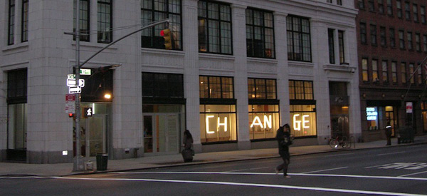

-
What Matters Most at Exit Art
by Laila Pedro May 5, 2010
Art with a capital-P Point comes with a high level of cringe-and-squirm potential. Art with the dreaded double-P, the political Point, is even more cause for wariness, if not outright alarm. Why call it art, after all? Why choose the realm of art to communicate a political message, rather than its more comfortable homes, the pamphlet, the motto, the agit-prop poster? This is not to say that art that happens to be, or to become, political, either because it is ineluctably so, or because of the social context in which it emerges, is to be disparaged or rejected for containing political elements. Chris Ofili’s work, for instance, was politicized beyond anything it should necessarily have elicited, due, first to a fundamental misreading of his chosen materials, as in the case of The Holy Virgin Mary, where Rudolf Giuliani’s absurd lawsuit rested on the myopic Western assumption that elephant dung was intended to be sacrilegious, when, in fact, it is, in Ofili’s ancestral Nigerai, a sacred material; and secondly, to the reactionary tendencies of socio-religious fundamentalists, as in the case of Piss Christ. Then there are those works that brilliantly walk the fine line between art and propaganda, as in Orwell’s 1984 or Huxley’s Brave New World, works that whose artistic logic is dictated made stronger by a clearly structured political ideology. These, however, are few and far between. More often, what we get are hamfisted, obvious acts of sloganeering that would have been better chanted by crowds or scrawled on walls than mottoes than represented as artworks. “Political” art, tends, for me, to violate an essential philosophical principle, eloquently articulated by the French literary theorist and poet Édouard Glissant: “dire, sans dire, tout en disant,” “to say, without saying, while saying.” That is to say, the best works of art are allusive rather than explicit; they suggest rather than indicating.
Nonetheless, there are some issues that are so pressing, so devastatingly urgent, that to ignore them, artistically, is hardly more defensible. For Orwell the issue was totalitarianism, for us the urgent question is the environment, climate change, or whatever you want to call the fact that the earth is on a fairly cataclysmic path. Artists are able, in a unique way, to draw our attention, and drawing our attention to the environmental crisis is both commendable and necessary. In that sense, the intention of Exit Underground’s exhibit What Matters Most? is irreproachable. It is a generous, collective showcase of works by over 275 artists that began with responses to this question posted on Andrew Revkin’s New York Times blog, Dot Earth, by leading environmental experts, writers, and readers. Artists participating in this exhibition were asked to either create an original artwork related to the blog entry of their choice or to donate a relevant existing work.” The problem, of course, with such a broadly inclusive approach, is that one has to sift through a lot of effluvia to find the few gems. The necessary price of pluralistic high-mindedness is the inclusion of some really incredible small thinking. The exhibit as a whole was interesting because of this tension: such a show, about an issue that affects everybody, rich and poor, across all corners of the globe, should, by nature be heterogeneous, diverse, wide-ranging. The very nature of its diversity, though, is questionable: it would be worth inquiring into how much socio-economic and regional diversity is really represented by the artists included. I’ll withhold judgment for now, but I have my suspicions. Back to those effluvia, however: there are some genuinely compelling pieces among the drawings, paintings and photographs on display, but first one must get through such gems as the bullhorn-titled Don’t Let Gas Drilling Pollute our Water. This represents an androgynous black silhouette surrounded by clip-art-like bubbles describing the various health ailments (heart disease, respiratory disease, and so forth) caused by contaminated water. An unusually sanguine critic might consider the Print-Shop-Deluxe aesthetic to be an interesting choice, or some kind of commentary on something. Really, the effect is that of a public access commercial. This kind of folly, like the bewildering photo of a young man standing on a mountainside in what looks like Vermont, gazing rather dreamily into the mist, or the horizon, or (horrors!) the future, while holding a plastic water bottle (whether this rather acid irony was intentional or not, I can’t say definitively, but I think not), is, unfortunately, characteristic of much of the exhibit.
With patience, though, we arrive at other, better works, some of which are truly lovely, even transcendent. Even more satisfying is that they have nothing in common, speaking to a better kind of inclusiveness, a diversity of inspiration, aesthetic and medium, but not of quality. The urgency of the global water shortage is much more simply and eloquently invoked in Phillip Song’s delicate, if somewhat staid, pencil drawing of various vessels (beakers, pitchers, glasses and so on) containing what is presumably water. Throughout the exhibit, in fact, drawings and watercolors emerged again and again as the more compelling works. Chrissie Orr’s spectacular watercolor of what look to be scallion roots is a tender evocation of spring, and speaks poignantly and directly to the question of “what matters most”. Like Orr, Melissa McGill engages directly with representations of trees and nature; her intriguing mixed-media take on Bernini’s Daphne and Apollo is in fact a re-re-representation (that is a representation of a sculpture about a legend). The implications of the story of the wood-nymph who begs to be transformed into a tree in order to escape rape at the Sun-god’s hands is a powerful metaphor for environmentalism, and the mixed-media composition is effective and elegant.
There were many representations, too, of surfaces we walk on, thematic extrapolations on the idea of “Earth.” Ann Fanciullo’s luminous, surreal photo of sawdust on a paving stone is a lovely and witty harmonizing of the natural and the man-made; the sawdust looks like gilding and the concrete of the street is nearly organic. Joy Garnett’s photo of a scoop of ice cream melting on industrial carpet is evocative and wonderfully strange; the ice cream looks like an unidentifiable organism, while the melting alludes cleverly to global warming. The chemical nature of the industrial carpet is almost grisly when juxtaposed with the living, breathing feeling of the desert.
The last piece I looked at was Mauro Zamora’s mixed-media (one of the exhibit’s bigger mistakes was failing to note the medium of each piece) satellite photo of mountains, streaked here and there with what looked to be acrylic paint. It is very moving to consider having to see the earth from afar, streaked with black, no longer habitable; this is but one of the many possible evocations of this work. Like all the best pieces in the exhibit, it was aesthetically complete, thematically intelligent, and visually compelling, without being explicit or facile or cheap. I’m not sure, however, that a more incisive curatorial selection would have been the way to go; it seems essential, on leaving, to represent such varied engagements with the issues environmentalism raises. It was art with a Point, but the Point is well taken.